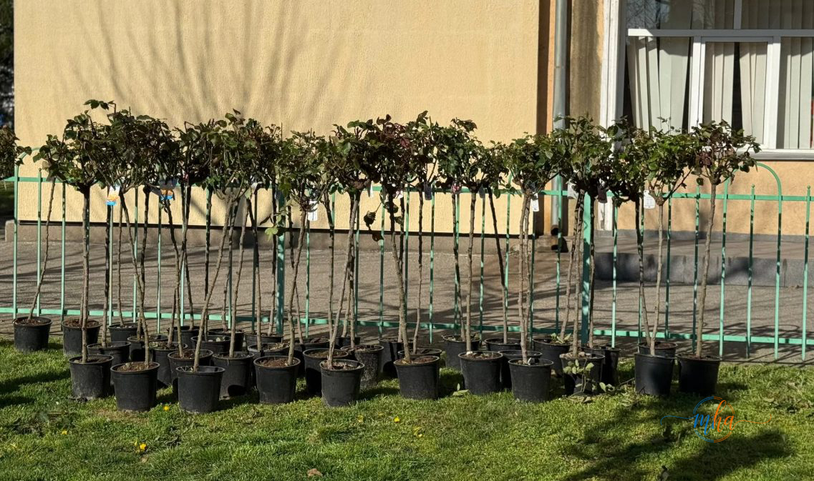

🌸 Specie: parfumată, în mai multe culori, rezistentă la variații de temperatură și poluare
📍 Locație: Promenada Crișan, Drobeta-Turnu Severin
♾ Trandafirii vechi: nu sunt aruncați — sunt relocați în alte zone ale orașului
Promenada Crișan, una dintre cele mai frecventate zone de agrement din Drobeta-Turnu Severin, intră într-un amplu proces de revitalizare. Lucrările vizează înlocuirea trandafirilor ajunși la maturitate cu aproximativ 800 de exemplare tinere, dintr-o specie parfumată, disponibilă în mai multe culori, special selectată pentru rezistența sa la condițiile climatice și la mediul urban.
Intervenția este parte dintr-un program continuu de îngrijire a spațiilor verzi din municipiu, coordonat de Primăria Drobeta-Turnu Severin, și vine să răspundă nevoii de reîmprospătare a unuia dintre cele mai simbolice puncte verzi ale orașului.
Primarul Screciu, prezent la lucrări: „Zona trebuie să rămână atractivă și îngrijită"

Primarul municipiului Drobeta-Turnu Severin, Marius Screciu, a fost prezent la fața locului pentru a superviza lucrările și a explicat filosofia din spatele acestei intervenții:
„Am început reamenajarea promenadei Crișan printr-un proces atent de revitalizare a spațiului verde. Trandafirii ajunși la maturitate nu sunt îndepărtați, ci relocați în alte zone din oraș, iar în locul lor plantăm alți trandafiri pentru a păstra zona atractivă și îngrijită, aceasta fiind îndrăgită de severineni."
— Marius Screciu, primarul municipiului Drobeta-Turnu Severin
Declarația primarului subliniază o abordare responsabilă față de patrimoniul verde al orașului: trandafirii maturi nu sunt eliminați, ci mutați în alte locuri din Drobeta-Turnu Severin, asigurând astfel că întregul municipiu beneficiază de pe urma acestei operațiuni de reînnoire.
Specie selectată pentru rezistență și estetică pe termen lung
Alegerea noilor trandafiri nu a fost întâmplătoare. Reprezentanții firmei care se ocupă de întreținerea spațiilor verzi din municipiu au explicat criteriile care au stat la baza selecției:
„Am optat pentru o specie de trandafiri cu o bună rezistență la variațiile de temperatură și la poluare, dar și cu o perioadă de înflorire îndelungată. Sistemul de plantare și întreținere este gândit astfel încât aceste plante să se dezvolte uniform și să ofere un aspect plăcut pe termen lung."
— Reprezentanții firmei de întreținere a spațiilor verzi
Concret, noile exemplare sunt adaptate atât iernilor cu variații bruște de temperatură, specifice zonei Mehedinți, cât și condițiilor de trafic și poluare urbană. Perioada extinsă de înflorire înseamnă că promenada va fi înflorită și parfumată pe o durată mai mare din an, spre bucuria trecătorilor și a turiștilor care vizitează Drobeta-Turnu Severin.
Severinenii, entuziaști: „Așa câștigă tot orașul"
Lucrările în desfășurare pe Promenada Crișan au atras atenția locuitorilor care trec zilnic prin zonă. Reacțiile sunt, în covârșitoarea majoritate, pozitive:
„Era nevoie de o reimprospătare. Trandafirii erau frumoși, dar se vedea că sunt vechi. Așa arată mult mai îngrijit."
— O locuitoare din zona Promenadei Crișan
„E foarte bine că nu îi aruncă, ci îi mută în alte zone. Așa câștigă tot orașul."
— Un cetățean aflat în trecere pe promenadă
Lucrările continuă — zona rămâne verde și atractivă
Intervenția de pe Promenada Crișan nu se oprește aici. Lucrările vor continua în perioada următoare, în funcție de ritmul de plantare și de condițiile meteorologice, iar autoritățile locale dau asigurări că zona va rămâne un spațiu verde atractiv și îngrijit pentru locuitorii municipiului.
Promenada Crișan reprezintă unul dintre cele mai vizitate spații de promenadă din Drobeta-Turnu Severin, frecventat zilnic de familii, pensionari și tineri. Reamenajarea sa cu 800 de trandafiri parfumați și colorați promite să transforme această zonă într-un punct de atracție și mai spectaculos în sezonul cald al anului 2026.
Sursa: Primăria municipiului Drobeta-Turnu Severin